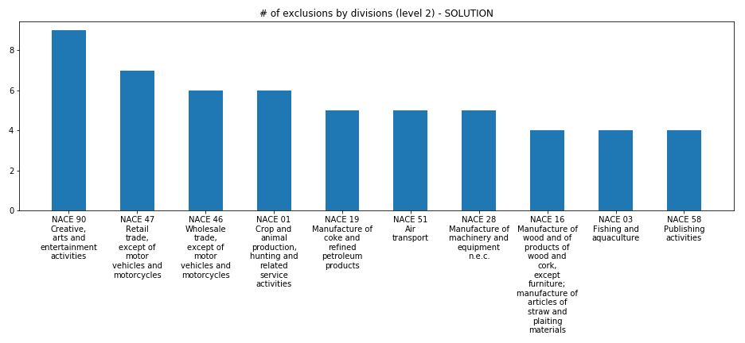

Exam - Fri 17, Jul 2020¶
Scientific Programming - Data Science @ University of Trento
Introduction¶
Taking part to this exam erases any vote you had before
What to do¶
Download
sciprog-ds-2020-07-17-exam.zipand extract it on your desktop. Folder content should be like this:
sciprog-ds-2020-07-17-FIRSTNAME-LASTNAME-ID
exam-2020-07-17.ipynb
theory.txt
office_queue_exercise.py
office_queue_test.py
Rename
sciprog-ds-2020-07-17-FIRSTNAME-LASTNAME-IDfolder: put your name, lastname an id number, likesciprog-ds-2020-07-17-john-doe-432432
From now on, you will be editing the files in that folder. At the end of the exam, that is what will be evaluated.
Edit the files following the instructions in this worksheet for each exercise. Every exercise should take max 25 mins. If it takes longer, leave it and try another exercise.
When done:
if you have unitn login: zip and send to examina.icts.unitn.it/studente
If you don’t have unitn login: tell instructors and we will download your work manually
Part A - NACE codes¶
https://ec.europa.eu/eurostat/ramon/nomenclatures/index.cfm?TargetUrl=LST_CLS_DLD&StrNom=NACE_REV2&StrLanguageCode=EN&StrLayoutCode=HIERARCHIC#
So you want to be a data scientist. Good, plenty of oopportunities ahead!
After graduating, you might discover though that many companies require you to actually work as a freelancer: you will just need to declare to the state which type of economic activity you are going to perform, they say. Seems easy, but you will soon encounter a pretty burocratic problem: do public institutions even know what a data scientist is? If not, what is the closest category they recognize? Is there any specific exclusion that would bar you from entering that category?
If you are in Europe, you will be presented with a catalog of economic activites you can choose from called NACE, which is then further specialized by various states (for example Italy’s catalog is called ATECO)
Sections¶
A NACE code is subdivided in a hierarchical, four-level structure. The categories at the highest level are called sections, here they are:

Section detail¶
If you drill down in say, section M, you will find something like this:
The first two digits of the code identify the division, the third digit identifies the group, and the fourth digit identifies the class:

Let’s pick for example Advertising agencies , which has code 73.11:
Level |
Code |
Spec |
Description |
|
|---|---|---|---|---|
1 |
Section |
M |
a single alphabetic char |
PROFESSIONAL, SCIENTIFIC AND TECHNICAL ACTIVITIES |
2 |
Division |
73 |
two-digits |
Advertising and market research |
3 |
Group |
73.1 |
three-digits, with dot after first two |
Advertising |
4 |
Class |
73.12 |
four-digits, with dot after first two |
Advertising agencies |
Specifications¶
WARNING: CODES MAY CONTAIN ZEROES!
IF YOU LOAD THE CSV IN LIBREOFFICE CALC OR EXCEL, MAKE SURE IT IMPORTS EVERYTHING AS STRING!
WATCH OUT FOR CHOPPED ZEROES !
Zero examples:
Veterinary activities contains a double zero at the end :
75.00group Manufacture of beverages contains a single zero at the end:
11.0Manufacture of beer contains zero inside :
11.05Support services to forestry contains a zero at the beginning :
02.4which is different from02.40even if they have the same description !
The section level code is not integrated in the NACE code: For example, the activity Manufacture of glues is identified by the code 20.52, where 20 is the code for the division, 20.5 is the code for the group and 20.52 is the code of the class; section C, to which this class belongs, does not appear in the code itself.
There may be gaps (not very important for us): The divisions are coded consecutively. However, some “gaps” have been provided to allow the introduction of additional divisions without a complete change of the NACE coding.
NACE CSV¶
We provide you with a CSV NACE_REV2_20200628_213139.csv that contains all the codes. Try to explore it with LibreOffice Calc or pandas
Here we show some relevant parts (NOTE: for part A you will NOT need to use pandas)
[1]:
import pandas as pd # we import pandas and for ease we rename it to 'pd'
import numpy as np # we import numpy and for ease we rename it to 'np'
pd.set_option('display.max_colwidth', -1)
df = pd.read_csv('NACE_REV2_20200628_213139.csv', encoding='UTF-8')
df.info()
<class 'pandas.core.frame.DataFrame'>
RangeIndex: 996 entries, 0 to 995
Data columns (total 10 columns):
Order 996 non-null int64
Level 996 non-null int64
Code 996 non-null object
Parent 975 non-null object
Description 996 non-null object
This item includes 778 non-null object
This item also includes 202 non-null object
Rulings 134 non-null object
This item excludes 507 non-null object
Reference to ISIC Rev. 4 996 non-null object
dtypes: int64(2), object(8)
memory usage: 77.9+ KB
[2]:
df.head(5)
[2]:
| Order | Level | Code | Parent | Description | This item includes | This item also includes | Rulings | This item excludes | Reference to ISIC Rev. 4 | |
|---|---|---|---|---|---|---|---|---|---|---|
| 0 | 398481 | 1 | A | NaN | AGRICULTURE, FORESTRY AND FISHING | This section includes the exploitation of vegetal and animal natural resources, comprising the activities of growing of crops, raising and breeding of animals, harvesting of timber and other plants, animals or animal products from a farm or their natural habitats. | NaN | NaN | NaN | A |
| 1 | 398482 | 2 | 01 | A | Crop and animal production, hunting and related service activities | This division includes two basic activities, namely the production of crop products and production of animal products, covering also the forms of organic agriculture, the growing of genetically modified crops and the raising of genetically modified animals. This division includes growing of crops in open fields as well in greenhouses.\n \nGroup 01.5 (Mixed farming) breaks with the usual principles for identifying main activity. It accepts that many agricultural holdings have reasonably balanced crop and animal production, and that it would be arbitrary to classify them in one category or the other. | This division also includes service activities incidental to agriculture, as well as hunting, trapping and related activities. | NaN | Agricultural activities exclude any subsequent processing of the agricultural products (classified under divisions 10 and 11 (Manufacture of food products and beverages) and division 12 (Manufacture of tobacco products)), beyond that needed to prepare them for the primary markets. The preparation of products for the primary markets is included here.\n\nThe division excludes field construction (e.g. agricultural land terracing, drainage, preparing rice paddies etc.) classified in section F (Construction) and buyers and cooperative associations engaged in the marketing of farm products classified in section G. Also excluded is the landscape care and maintenance, which is classified in class 81.30. | 01 |
| 2 | 398483 | 3 | 01.1 | 01 | Growing of non-perennial crops | This group includes the growing of non-perennial crops, i.e. plants that do not last for more than two growing seasons. Included is the growing of these plants for the purpose of seed production. | NaN | NaN | NaN | 011 |
| 3 | 398484 | 4 | 01.11 | 01.1 | Growing of cereals (except rice), leguminous crops and oil seeds | This class includes all forms of growing of cereals, leguminous crops and oil seeds in open fields. The growing of these crops is often combined within agricultural units.\n\nThis class includes:\n- growing of cereals such as:\n . wheat\n . grain maize\n . sorghum\n . barley\n . rye\n . oats\n . millets\n . other cereals n.e.c.\n- growing of leguminous crops such as:\n . beans\n . broad beans\n . chick peas\n . cow peas\n . lentils\n . lupines\n . peas\n . pigeon peas\n . other leguminous crops\n- growing of oil seeds such as:\n . soya beans\n . groundnuts\n . castor bean\n . linseed\n . mustard seed\n . niger seed\n . rapeseed\n . safflower seed\n . sesame seed\n . sunflower seed\n . other oil seeds | NaN | NaN | This class excludes:\n- growing of rice, see 01.12\n- growing of sweet corn, see 01.13\n- growing of maize for fodder, see 01.19\n- growing of oleaginous fruits, see 01.26 | 0111 |
| 4 | 398485 | 4 | 01.12 | 01.1 | Growing of rice | This class includes:\n- growing of rice (including organic farming and the growing of genetically modified rice) | NaN | NaN | NaN | 0112 |
We can focus on just these columns:
[3]:
selection = [398482,398488,398530,398608,398482,398518,398521,398567]
from IPython.display import display
example_df = df[['Order', 'Level','Code','Parent','Description','This item excludes']]
# Assuming the variable df contains the relevant DataFrame
example_df = example_df[example_df['Order'].isin(selection)]
display(example_df.style.set_properties(**{'white-space': 'pre-wrap',}))
| Order | Level | Code | Parent | Description | This item excludes | |
|---|---|---|---|---|---|---|
| 1 | 398482 | 2 | 01 | A | Crop and animal production, hunting and related service activities | Agricultural activities exclude any subsequent processing of the agricultural products (classified under divisions 10 and 11 (Manufacture of food products and beverages) and division 12 (Manufacture of tobacco products)), beyond that needed to prepare them for the primary markets. The preparation of products for the primary markets is included here. The division excludes field construction (e.g. agricultural land terracing, drainage, preparing rice paddies etc.) classified in section F (Construction) and buyers and cooperative associations engaged in the marketing of farm products classified in section G. Also excluded is the landscape care and maintenance, which is classified in class 81.30. |
| 7 | 398488 | 4 | 01.15 | 01.1 | Growing of tobacco | This class excludes: - manufacture of tobacco products, see 12.00 |
| 37 | 398518 | 4 | 01.64 | 01.6 | Seed processing for propagation | This class excludes: - growing of seeds, see groups 01.1 and 01.2 - processing of seeds to obtain oil, see 10.41 - research to develop or modify new forms of seeds, see 72.11 |
| 40 | 398521 | 2 | 02 | A | Forestry and logging | Excluded is further processing of wood beginning with sawmilling and planing of wood, see division 16. |
| 49 | 398530 | 2 | 03 | A | Fishing and aquaculture | This division does not include building and repairing of ships and boats (30.1, 33.15) and sport or recreational fishing activities (93.19). Processing of fish, crustaceans or molluscs is excluded, whether at land-based plants or on factory ships (10.20). |
| 86 | 398567 | 4 | 09.90 | 09.9 | Support activities for other mining and quarrying | This class excludes: - operating mines or quarries on a contract or fee basis, see division 05, 07 or 08 - specialised repair of mining machinery, see 33.12 - geophysical surveying services, on a contract or fee basis, see 71.12 |
| 127 | 398608 | 4 | 11.03 | 11.0 | Manufacture of cider and other fruit wines | This class excludes: - merely bottling and labelling, see 46.34 (if performed as part of wholesale) and 82.92 (if performed on a fee or contract basis) |
A1 Extracting codes¶
Let’s say European Commission wants to review the catalog to simplify it. One way to do it, could be to look for codes that have lots of exclusions, the reasoning being that trying to explain somebody something by stating what it is not often results in confusion.
A1.1 is_nace¶
Implement following function. NOTE: it was not explicitly required in the original exam but could help detecting words.
Show solution[4]:
def is_nace(word):
"""Given a word, RETURN True if the word is a NACE code, else otherwise"""
raise Exception('TODO IMPLEMENT ME !')
assert is_nace('0') == False
assert is_nace('01') == True
assert is_nace('A') == True # this is a Section
assert is_nace('AA') == False
assert is_nace('a') == False
assert is_nace('01.2') == True
assert is_nace('01.20') == True
assert is_nace('03.25') == True
assert is_nace('02.753') == False
assert is_nace('300') == False
assert is_nace('5012') == False
A1.2 extract_codes¶
Implement following function which extracts codes from This item excludes column cells. For examples, see asserts.
[5]:
def extract_codes(text):
"""Extracts all the NACE codes from given text (a single string),
and RETURN a list of the codes
- also extracts section letters
- list must have *no* duplicates
"""
raise Exception('TODO IMPLEMENT ME !')
assert extract_codes('group 02.4') == ['02.4']
assert extract_codes('class 02.40') == ['02.40']
assert extract_codes('.') == []
assert extract_codes('exceeding 300 litres') == []
assert extract_codes('see 46.34') == ['46.34']
assert extract_codes('divisions 10 and 11') == ['10','11']
assert extract_codes('(10.20)') == ['10.20']
assert extract_codes('(30.1, 33.15)') == ['30.1', '33.15']
assert extract_codes('as outlined in groups 85.1-85.4, i.e.') == ['85.1','85.4']
assert extract_codes('see 25.99 see 25.99') == ['25.99'] # no duplicates
assert extract_codes('section A') == ['A']
assert extract_codes('in section G. Also') == ['G']
assert extract_codes('section F (Construction)') == ['F']
assert extract_codes('section A, section A') == ['A']
[6]:
# MORE REALISTIC asserts:
t01 = """Agricultural activities exclude any subsequent processing of the
agricultural products (classified under divisions 10 and 11 (Manufacture of food
products and beverages) and division 12 (Manufacture of tobacco products)), beyond
that needed to prepare them for the primary markets. The preparation of products for
the primary markets is included here.
The division excludes field construction (e.g. agricultural land terracing,
drainage, preparing rice paddies etc.) classified in section F (Construction) and buyers
and cooperative associations engaged in the marketing of farm products classified
in section G. Also excluded is the landscape care and maintenance,
which is classified in class 81.30.
"""
assert extract_codes(t01) == ['10','11','12','F','G','81.30']
t01_15 = """This class excludes:
- manufacture of tobacco products, see 12.00
"""
assert extract_codes(t01_15) == ['12.00']
t03 = """This division does not include building and repairing of ships and
boats (30.1, 33.15) and sport or recreational fishing activities (93.19).
Processing of fish, crustaceans or molluscs is excluded, whether at land-based
plants or on factory ships (10.20).
"""
assert extract_codes(t03) == ['30.1', '33.15','93.19','10.20']
t11_03 = """This class excludes:
- merely bottling and labelling, see 46.34 (if performed as part of wholesale)
and 82.92 (if performed on a fee or contract basis)
"""
assert extract_codes(t11_03) == ['46.34', '82.92']
t01_64 = """This class excludes:
- growing of seeds, see groups 01.1 and 01.2
- processing of seeds to obtain oil, see 10.41
- research to develop or modify new forms of seeds, see 72.11
"""
assert extract_codes(t01_64) == ['01.1','01.2','10.41','72.11']
t02 = """Excluded is further processing of wood beginning with sawmilling and planing of wood,
see division 16.
"""
assert extract_codes(t02) == ['16']
t09_90 = """This class excludes:
- operating mines or quarries on a contract or fee basis, see division 05, 07 or 08
- specialised repair of mining machinery, see 33.12
- geophysical surveying services, on a contract or fee basis, see 71.12
"""
assert extract_codes(t09_90) == ['05','07','08','33.12','71.12']
A2 build_db¶
Given a filepath pointing to a NACE CSV, reads the CSV and RETURN a dictionary mapping codes to dictionaries which hold the code descriptionn and a field with the list of excluded codes, for example:
{'01': {'description': 'Crop and animal production, hunting and related service activities',
'exclusions': ['10', '11', '12', 'F', 'G', '81.30']},
'01.1': {'description': 'Growing of non-perennial crops', 'exclusions': []},
'01.11': {'description': 'Growing of cereals (except rice), leguminous crops and oil seeds',
'exclusions': ['01.12', '01.13', '01.19', '01.26']},
'01.12': {'description': 'Growing of rice', 'exclusions': []},
'01.13': {'description': 'Growing of vegetables and melons, roots and tubers',
'exclusions': ['01.28', '01.30']},
...
...
}
The complete desired output is in file expected_db.py
Show solution[7]:
def build_db(filepath):
raise Exception('TODO IMPLEMENT ME !')
activities_db = build_db('NACE_REV2_20200628_213139.csv')
#activities_db
A3 plot¶
Implement function plot which given a db as created at previous point and a code level among 1,2,3,4, plots the number of exclusions for all codes of that exact level (so do not include sublevels in the sum), sorted in reversed order.
remember to plot title, notice it should shows the type of level (could be Section, Division, Group, or Class)
try to display labels nicely as in the example output
(if you look at the graph, apparently European Union has a hard time defining what an artist is :-)
IMPORTANT: IF you couldn’t implement the function build_db , you will still find the complete desired output in file expected_db.py, to import it write: from expected_db import activities_db

[8]:
%matplotlib inline
def plot(db, level):
import matplotlib.pyplot as plt
raise Exception('TODO IMPLEMENT ME !')
#Uncomment *only* if you had problems with build_db
#from expected_db import activities_db
#1 Section
#2 Division
#3 Group
#4 Class
plot(activities_db, 2)


Part B¶
### B1 Theory
Write the solution in separate theory.txt file
B1.1 complexity¶
Given a list L of n elements, please compute the asymptotic computational complexity of the following function, explaining your reasoning.
def my_fun(L):
n = len(L)
if n <= 1:
return 1
else:
L1 = L[0:n//2]
L2 = L[n//2:]
a = my_fun(L1) + min(L1) - n
b = my_fun(L2) + min(L2) - n
return a + b
B1.2 describe¶
Briefly describe what a hash table is and provide an example of its usage.
B2 - OfficeQueue¶
An office offers services 'x', 'y' and 'z'. When people arrive at the office, they state which service they need, get a ticket and enqueue. Suppose at the beginning of the day we are considering there is only one queue.
The office knows on average how much time each service requires:
[9]:
SERVICES = { 'x':5, # minutes
'y':20,
'z':30
}
With this information it is able to inform new clients approximately how long they will need to wait.
OfficeQueue is implemented as a linked list, where people enter the queue from the tail and leave from the head. We can represent it like this (NOTE: ‘cumulative wait’ is not actually stored in the queue):
wait time: 155 minutes
cumulative wait: 5 10 15 45 50 55 85 105 110 130 150 155
wait times: 5 5 5 30 5 5 30 20 5 20 20 5
x x x z x x z y x y y x
a -> b -> c -> d -> e -> f -> g -> h -> i -> l -> m -> n
^ ^
| |
head tail
Each node holds the client identifier 'a', 'b', 'c', and the service label (like 'x') requested by the client:
class Node:
def __init__(self, initdata, service):
self._data = initdata
self._service = service
self._next = None
OfficeQueue keeps fields _services, _size and a field _wait_time which holds the total wait time of the queue:
class OfficeQueue:
def __init__(self, services):
self._head = None
self._tail = None
self._size = 0
self._wait_time = 0
self._services = dict(services)
[10]:
from office_queue_sol import *
SERVICES = { 'x':5, # minutes
'y':20,
'z':30
}
oq = OfficeQueue(SERVICES)
print(oq)
OfficeQueue:
[11]:
oq.enqueue('a','x')
oq.enqueue('b','x')
oq.enqueue('c','x')
oq.enqueue('d','z')
oq.enqueue('e','x')
oq.enqueue('f','x')
oq.enqueue('g','z')
oq.enqueue('h','y')
oq.enqueue('i','x')
oq.enqueue('l','y')
oq.enqueue('m','y')
oq.enqueue('n','x')
[12]:
print(oq)
OfficeQueue:
x x x z x x z y x y y x
a -> b -> c -> d -> e -> f -> g -> h -> i -> l -> m -> n
[13]:
oq.size()
[13]:
12
Total wait time can be accessed from outside with the method wait_time():
[14]:
oq.wait_time()
[14]:
155
ATTENTION: you only need to implement the methods time_to_service and split
DO NOT touch other methods.
B2.1 - time_to_service¶
Open file office_queue_exercise.py with and start editing.
In order to schedule work and pauses, for each service office employees want to know after how long they will have to process the first client requiring that particular service.
First service encountered will always have a zero time interval (in this example it’s x):
wait time: 155
cumulative wait: 5 10 15 45 50 55 85 105 110 130 150 155
wait times: 5 5 5 30 5 5 30 20 5 20 20 5
x x x z x x z y x y y x
a -> b -> c -> d -> e -> f -> g -> h -> i -> l -> m -> n
|| | |
x : 0 | |
| | |
|---------------| |
| z : 15 |
| |
|-----------------------------------|
y : 85
[15]:
SERVICES = { 'x':5, # minutes
'y':20,
'z':30
}
oq = OfficeQueue(SERVICES)
print(oq)
OfficeQueue:
[16]:
oq.enqueue('a','x')
oq.enqueue('b','x')
oq.enqueue('c','x')
oq.enqueue('d','z')
oq.enqueue('e','x')
oq.enqueue('f','x')
oq.enqueue('g','z')
oq.enqueue('h','y')
oq.enqueue('i','x')
oq.enqueue('l','y')
oq.enqueue('m','y')
oq.enqueue('n','x')
print(oq)
OfficeQueue:
x x x z x x z y x y y x
a -> b -> c -> d -> e -> f -> g -> h -> i -> l -> m -> n
Method to implement will return a dictionary mapping each service to the time interval after which the service is first required:
[17]:
oq.time_to_service()
[17]:
{'x': 0, 'y': 85, 'z': 15}
Services not required by any client¶
As a special case, if a service is not required by any client, its time interval is set to the queue total wait time (because a client requiring that service might still show up in the future and get enqueued)
[18]:
oq = OfficeQueue(SERVICES)
oq.enqueue('a','x') # completed after 5 mins
oq.enqueue('b','y') # completed after 5 + 20 mins
print(oq)
OfficeQueue:
x y
a -> b
[19]:
print(oq.wait_time())
25
[20]:
oq.time_to_service() # note z is set to total wait time
[20]:
{'x': 0, 'y': 5, 'z': 25}
Now implement this:
def time_to_service(self):
""" RETURN a dictionary mapping each service to the time interval after which
the service is first required.
- the first service encountered will always have a zero time interval
- If a service is not required by any client, time interval is set to
the queue total wait time
- MUST run in O(n) where n is the size of the queue.
"""
Testing: python3 -m unittest office_queue_test.TestTimeToService
B2.2 split¶
Suppose a new desk is opened: to reduce waiting times the office will comunicate on a screen to some people in the current queue to move to the new desk, thereby creating a new queue. The current queue will be split in two according to this criteria: after the cut, the total waiting time of the current queue should be the same or slightly bigger than the waiting time in the new queue:
ATTENTION: This example is different from previous one (total wait time is 150 instead of 155)
ORIGINAL QUEUE:
wait time = 150 minutes
wait time / 2 = 75 minutes
cumulative wait: 30 50 80 110 115 120 140 145 150
wait times: 30 20 30 30 5 5 20 5 5
z y z z x x y x x
a -> b -> c -> d -> e -> f -> g -> h -> i
^ ^ ^
| | |
head cut here tail
MODIFIED QUEUE:
wait time: 80 minutes
wait times: 30 20 30
cumulative wait: 30 50 80
z y z
a -> b -> c
^ ^
| |
head tail
NEW QUEUE:
wait time: 75 minutes
wait times: 30 5 5 20 5 5
cumulative wait: 30 35 40 60 65 70
z x x y x x
d -> e -> f -> g -> h -> i
^ ^
| |
head tail
Implement this method:
def split(self):
""" Perform two operations:
- MODIFY the queue by cutting it so that the wait time of this cut
will be half (or slightly more) of wait time for the whole original queue
- RETURN a NEW queue holding remaining nodes after the cut - the wait time of
new queue will be half (or slightly less) than original wait time
- If queue to split is empty or has only one element, modify nothing
and RETURN a NEW empty queue
- After the call, present queue wait time should be equal or slightly bigger
than returned queue.
- DO *NOT* create new nodes, just reuse existing ones
- REMEMBER to set _size, _wait_time, _tail in both original and new queue
- MUST execute in O(n) where n is the size of the queue
"""
Testing: python3 -m unittest office_queue_test.SplitTest
[ ]: